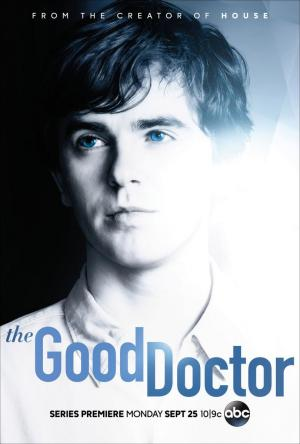

The Good Doctor |
||
|---|---|---|
|  | Sinopsis: Shaun Murphy (Freddie Highmore) es un joven cirujano residente que padece autismo y síndrome de Savant, conocido también como el “síndrome del sabio”, una enfermedad que le causa problemas a la hora de relacionarse con los demás, pero que a su vez le ha permitido desarrollar unas habilidades mentales prodigiosas, como una extraordinaria memoria. A pesar de que Shaun ha tenido una infancia muy complicada, se ha convertido en un médico con mucho talento y ha sido reclutado por el doctor Aaron Glassman (Richard Schiff) en la unidad de cirugía pediátrica del prestigioso San José St. Bonaventure Hospital. Sin embargo, no toda la junta del hospital se muestra conforme con la decisión de incorporar al equipo a un cirujano con autismo. Shaun tendrá que despejar las dudas y demostrar su valía, y aunque pueda encontrar su camino hacia la sala de operaciones, todavía hay muchos desafíos y prejuicios a los que debe hacer frente para cumplir su sueño de salvar vidas. |
Director:David Shore,Seth Gordon Reparto:Freddie Highmore, Nicholas Gonzalez, Richard Schiff Año: 2017 Duracion:45 min cada capitulo Pais:Estados Unidos |
Criticas Profesionales:Erik Adams"Si hay alguien que pueda hacer buena televisión a partir de un médico genial que tiene dificultades a la hora de relacionarse con otras personas, es el creador de 'House' David Shore |
Trailer |
Obtener:AlquilarComprar |
Registrate/Iniciar Sesion